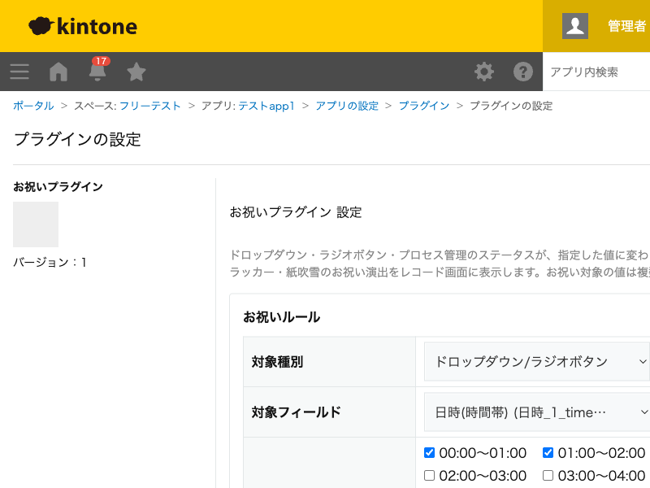

GovAppsプラグイン 安全性を確認できる無料kintoneプラグイン集
ドロップダウン・ラジオボタン・プロセス管理のステータスが、設定画面で指定した値に変わったときに、 くす玉・クラッカー・紙吹雪のお祝い演出をレコード画面に表示するプラグインです。お祝い対象の値は 複数選択でき、演出は2.5秒ほどで自動的に消えるため、派手すぎず、それでいて達成感の伝わる表示に なっています。
プロセス管理のステータスや、ドロップダウン・ラジオボタンの「対応状況」フィールドが「完了」「承認済」などの値に変わった瞬間に、くす玉やクラッカーの演出を表示できます。日々の業務にちょっとした達成感を加えられます。
お祝い対象の値は複数選択できるため、「完了」と「承認済」のように、達成を表す複数のステータス値を1つのルールでまとめて演出対象にできます。演出パターン(くす玉・クラッカー・紙吹雪・ランダム)やバナーメッセージもルールごとに設定できます。
演出は、対象の値に「変わった」ときにのみ表示されます(レコードを開くたびに毎回表示されることはありません)。プロセス管理のステータスは、アクション実行前のタイミングで演出が表示されます。
kintoneセキュアコーディングガイドラインに沿って実装時にチェックしています。特に重要な点は次のとおりです。
GET /k/v1/app/status.json)を使いますが、呼び出しは必ずkintone.api()(kintone自身への呼び出し専用の内部ラッパー)のみを使用しています。レコード画面側の発火判定はJavaScript APIのイベントオブジェクトのみで完結し、REST呼び出しは行いません。外部サーバーへの通信・外部ライブラリの使用は一切ありません。<canvas>要素のCanvas 2D APIのみで描画しており、外部の紙吹雪ライブラリ等は組み込んでいません。innerHTMLではなくtextContentのみを使用しており、アプリ管理者が入力した文字列がHTMLとして解釈されることはありません。pointer-events: noneにしており、演出中も背後のレコード画面の操作(ボタン・入力欄のクリック)を妨げません。演出終了時には要素を確実にDOMから除去します。詳細な確認項目・確認日は下記GitHubのチェックリストに全項目を掲載しています。

このプラグインは、設定画面でプロセス管理のステータス選択肢一覧を表示するときにのみ、
ステータス設定確認API(GET /k/v1/app/status.json、内部向けラッパーの
kintone.api()経由)を実行します。レコード画面での演出表示自体は、JavaScript APIの
イベントオブジェクトのみで判定しており、追加のAPI実行は発生しません。